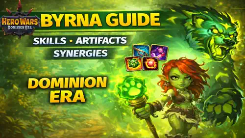
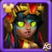

Byrna Guide – Skills, Skins, Glyphs and Counters in Hero Wars Dominion Era
- By: Alexandre Domingos. .
Byrna enters Hero Wars: Dominion Era as a healer who does much more than just refill health bars. She protects the front line with a guardian spirit, turns healing into permanent max health, and grows stronger every time her team restores health.

Who Is Byrna in Hero Wars: Dominion Era
Byrna is a back line healer with mage scaling and a Grove Keeper identity. Her kit is built around one simple idea: if your team keeps healing, Byrna keeps growing. That makes her a natural fit for defensive teams, sustain teams, and magic lineups that want to win long instead of winning fast.
- Main Role: Healer
- Additional Role: Mage / Grove Keeper
- Main Stat: Strength
- Position: Fights at the Back Line (Position 42)
- Patronage: Merlin, Axel, Biscuit, Khorus
What makes Byrna special is that she does not only heal. She creates a second health bar for the frontline through her spirit, spreads healing to the whole team, and turns healing events into extra Magic Attack. In practice, that means she starts useful and becomes more oppressive the longer the battle lasts.
Byrna - Maximum Stats Hero Wars Dominion Era
| Stat | Value | Stat | Value |
|---|---|---|---|
| Intelligence |  4,201 4,201 |
Agility |  2,663 2,663 |
| Strength |  16,534 16,534 |
Health |  828,482 828,482 |
| Physical Attack |  21,910 21,910 |
Magic Attack |  74,315 74,315 |
| Armor |  33,458 33,458 |
Magic Defense |  26,934 26,934 |
| Accuracy |  16,534 16,534 |
Crit Resistance |  16,534 16,534 |
| Magic Penetration |  42,409 42,409 |
Power |  174,510 174,510 |
Byrna Pros e Cons - Hero Wars: Web & Facebook
✅ Pros
- Very strong sustain in long fights thanks to team healing, max health growth, and repeated Magic Attack scaling.
- Guardian Spirit protects the frontline by splitting incoming damage and adding a second durability layer.
- Bear Cuddle can turn one healing target into healing for the whole team, which snowballs fast in sustain comps.
- Works well in magic-oriented teams because her damage and healing both scale with Magic Attack.
❌ Cons
- She is much better in long fights than in short burst fights, so fast teams can pressure her before she scales.
- Her value drops if the team has weak healing loops or if the frontline dies too quickly.
- Anti-heal and silence effects can reduce the impact of her sustain engine.
- She is currently marked as unobtainable temporarily, which limits immediate access for many players.
Byrna Skills Upgrade Priority - Hero Wars: Dominion Era
Byrna’s upgrades should first strengthen the healing engine that keeps the team alive, then improve the spirit mechanics that let her scale and defend longer fights.
1 - Roar of Nature (Ultimate)
Roar of Nature is the skill that makes Byrna immediately scary in long battles. It deals 66,020 magic damage to all enemies and heals allies for 66,020 health. The easy part is the teamwide damage and teamwide heal. The more important part is that 100% of the healing is converted into max health increase until the end of battle, so every cast makes your whole team harder to kill.
Formula - Magic Damage: 66,020 (70% Magic Attack + 100 x Level + 1,000)
Formula - Healing: 66,020 (70% Magic Attack + 100 x Level + 1,000)

Evolution Priority: Very High – This should be one of the first skills you care about because it does three important jobs at once: pressure, healing, and permanent max health growth for the team.
Skill Animation Info
- Keywords: Team heal, max health increase, magic damage
- Area: All enemies and all allies
2 - Guardian Spirit
Guardian Spirit is the skill that keeps Byrna’s frontline standing. She summons a spirit that binds to the front tank if there is one, or to a random ally otherwise. The protected hero only takes 50% of incoming damage, while the rest is transferred to the spirit. The spirit itself starts with 428,260 health, and while it is alive, Byrna stops dealing normal attack damage and instead commands the spirit to strike for 51,158 magic damage. When the protected ally is healed, the spirit is also healed for 200% of that amount, which is why this skill becomes much stronger in sustain teams.
Formula - Spirit Health: 428,260 (400% Magic Attack + 1000 x Level + 1,000)
Formula - Spirit Damage: 51,158 (50% Magic Attack + 100 x Level + 1,000)
Evolution Priority: High – This skill is central to Byrna’s identity because it protects the frontline and creates the healing loop that keeps the whole engine running. Upgrade it early after the core healing skills.
Skill Animation Info
- Initial Cooldown: 5 seconds
- Cooldown: 40 seconds
- Keywords: Damage sharing, spirit summon, frontline protection
3 - Bear Cuddle
Bear Cuddle is the skill that turns single-target healing into whole-team sustain. It places a 10-second effect on the front ally and heals them for 16,263 health per second. While the effect is active, every heal received by that ally sends a wave to nearby allies and restores 50% of the original healing. If Guardian Spirit is active, Bear Cuddle automatically follows the spirit’s protected ally, which makes the combo much easier to use in practice.
Formula - Healing per Second: 16,263 (20% Magic Attack + 10 x Level + 100)
Formula - Healing Reverberation: 50% of the initial healing

Evolution Priority: Very High – For beginners this is one of Byrna’s best upgrades because it makes team sustain easy to feel immediately. More healing here means more survival, more spread healing, and more Living Heart triggers later.
Skill Animation Info
- Cooldown: 20 seconds
- Duration: 10 seconds
- Keywords: Heal over time, shared healing, frontline support
4 - Living Heart
Living Heart is Byrna’s scaling passive. Every time any ally restores health, Byrna gains 554.2 Magic Attack until the end of battle. This does not look explosive at first glance, but once Bear Cuddle, Guardian Spirit, pet healing, and allied healing are all happening together, the number of triggers can become very high. That is how Byrna slowly turns from a safe healer into a much stronger healing and damage support.
Formula - Increased Magic Attack: 554.2 (0.05% Health + 1 x Level + 10)

Evolution Priority: Medium High – This passive is excellent, but it becomes best when the rest of Byrna’s healing engine is already working well. Upgrade it after the more immediately noticeable healing and protection skills.
Skill Animation Info
- Keywords: Passive scaling, magic attack growth, healing synergy
Best Skin for Byrna Hero Wars: Dominion Era
Byrna’s skin priority is mostly about choosing the stat that gives her the most reliable value in real fights, not just the stat that looks safest on paper.
Default Skin
Stats gain: Strength +1,365
- - Health from Strength: +54,600
- - Physical Attack from Strength: +1,365
Evolution Priority: Very High – Default Skin is Byrna’s best skin to evolve first because Strength gives her a large universal Health boost. Byrna wants time to keep healing, keep scaling, and keep her guardian spirit cycle active, so raw Health is simply more practical than extra Armor on most fights.
Total of Strength Skin Stones for max level:
 30,825
30,825

Ancient Skin
Stats gain: Armor +10,650
Evolution Priority: Medium – Ancient Skin is still useful, especially against heavy physical damage teams, but Byrna is a back line healer who benefits more from staying alive through larger Health totals than from focusing early on a single defensive stat.
Total of Intelligence Skin Stones for max level:
 55,410
55,410
Byrna Glyph Evolution Priority
Byrna’s best glyphs are the ones that directly improve healing output, scaling, and long-fight pressure. The visual order below follows the game, but the priority field shows real value.
1st Glyph - Magic Attack
Stats gain: Magic Attack +6,500
Evolution Priority: Very High – Byrna’s healing, spirit health, spirit damage, and ultimate all scale from Magic Attack. This glyph improves almost everything important in her kit.
2nd Glyph - Magic Penetration
Stats gain: Magic Penetration +6,500
Evolution Priority: High – This glyph improves the damage side of Byrna’s kit, especially her ultimate and spirit attacks. It matters more if you use her in magic teams and want her pressure to stay relevant.
3rd Glyph - Armor
Stats gain: Armor +6,500
Evolution Priority: Medium – Armor helps Byrna survive physical burst, but it does not improve her healing engine directly. Useful, though not one of the first upgrades to chase.
4th Glyph - Magic Defense
Stats gain: Magic Defense +6,500
Evolution Priority: Medium – Magic Defense is good for surviving mage-heavy teams, but like Armor it is more about stability than about increasing Byrna’s main strengths.
5th Glyph - Strength
Stats gain: Strength +1,135
- Health from Strength: +45,400
- Physical Attack from Strength: +1,135
Evolution Priority: Medium High – Strength gives Byrna a meaningful Health increase, which helps her survive long enough to scale. It does not beat Magic Attack, but it is stronger than it first looks for a back line support.
Byrna Artifact Evolution Priority Hero Wars: Dominion Era
Byrna’s artifact priorities should improve the parts of her kit that matter every fight: healing strength, spirit scaling, and enough damage to keep magic pressure relevant.
Talisman of the Orc Princess Artifact
Stats Gain: Magic Penetration +50,190
Evolution Priority: High – This weapon artifact activates with Byrna’s ultimate and helps her team push magic damage through enemy defenses. It is valuable, but it still comes after the book because Byrna needs stronger base scaling first.

Manuscript of the Void Artifact
Stats Gain: Magic Attack +8,364
Magic Penetration +16,731
Evolution Priority: Very High – This is Byrna’s best artifact to evolve first because it gives permanent value in every battle. More Magic Attack means stronger healing, stronger spirit scaling, and stronger ultimate damage all at once.

Ring of Strength Artifact
Stats Gain: Strength +6,249
- Health from Strength: +249,960
- Physical Attack from Strength: +6,249
Evolution Priority: Medium – Ring of Strength does improve Byrna’s durability a lot, but it does not raise her healing engine as efficiently as the book, and it does not help her teamwide magic pressure as much as the weapon.
Best Patronage for Byrna
Byrna wants pets that improve her magic scaling, help her survive burst, or add extra value to the long-fight sustain style that defines her best compositions.
1st Place:

Merlin is Byrna’s best patronage because his Magic Attack and Magic Penetration bonuses improve the exact stats that matter most for her. He boosts Roar of Nature, Guardian Spirit, and Bear Cuddle at the same time, while his patronage skill speeds up her magic-damage skills so her value comes online faster.
2nd Place:

Axel is the safest defensive choice. Byrna is a back line support that hates getting deleted before her healing engine starts to snowball, and Axel’s damage cap is excellent for stopping sudden burst kills. His extra Magic Attack also remains useful for her scaling.
3rd Place:

Khorus is a strong situational patron for magic-heavy teams. Byrna deals magic damage herself, so the aura converting part of that damage into shields can add another survival layer for her and for nearby Intelligence allies.
4th Place:

Biscuit is more matchup-dependent. The anti-heal utility can be useful against sustain teams, but he does less for Byrna’s own scaling plan than Merlin or Axel do, so he is usually not the first patronage pick.
How to Counter Byrna Hero Wars Dominion Era
Byrna is hardest to beat when fights last long enough for her healing loops and Magic Attack growth to stack up. The best counters either cut healing, punish magic-based supports, or stop her from getting repeated ultimates.
Biscuit is one of the cleanest counters to Byrna because anti-heal attacks the core of her entire kit. If healing is reduced, Bear Cuddle spreads less sustain, Guardian Spirit receives less healing, and Living Heart gains fewer triggers.

Celeste is a powerful hero counter because she can block healing at key moments. Byrna needs successful healing events to protect allies, to scale Magic Attack, and to keep the spirit alive, so Celeste attacks Byrna’s core plan directly.

Isaac is dangerous for Byrna because her kit contains important magic damage and magic scaling. His anti-mage control can slow down her ultimate rhythm and reduce the safety she gives to the frontline before the fight reaches Byrna’s preferred long-game state.
Byrna Best War Flag Hero Wars
Byrna performs best with War Flags that either accelerate her first ultimate from the back line or directly increase the healing value that powers her entire kit.

War Flag of Readiness
Byrna and Team Benefit: Byrna fights in the back line, so Readiness is excellent for her. The extra starting Energy on the rearmost hero helps Byrna reach Roar of Nature sooner, which means earlier team healing, earlier max health growth, and earlier tempo for her sustain engine.
War Flag of Recovery
Byrna and Team Benefit: Recovery is one of Byrna’s most natural flags because increasing all healing by 10% improves Roar of Nature, Bear Cuddle, and the general sustain pattern of her teams. More healing also means better Living Heart scaling over time.

War Flag of Decline
Byrna and Team Benefit: Decline is the situational choice for sustain mirrors. Byrna likes long fights, but reducing enemy healing helps her team win those slow battles first instead of allowing the opponent to keep up with her scaling.
Final Thoughts on Byrna - Hero Wars: Dominion Era
Byrna looks like a serious long-fight support. Her numbers show strong team healing, strong scaling, and a frontline protection tool that can make sustain teams much harder to break.
She will not be the kind of hero that wins every battle instantly. Instead, Byrna makes her team more annoying, more durable, and more dangerous every time another healing event happens. If that style fits your account, she is a hero worth watching closely.
Explore new skills with our featured guides!


Leave Your Opinion!
Did you like our Byrna Guide for Hero Wars: Dominion Era? Is there something you didn't understand or would like to suggest changes to? We invite you to join our comment section on the Alexandre Games Blog page. Feel free to express your opinion, clarify your doubts, and share your suggestions.
Click the button below to get started: